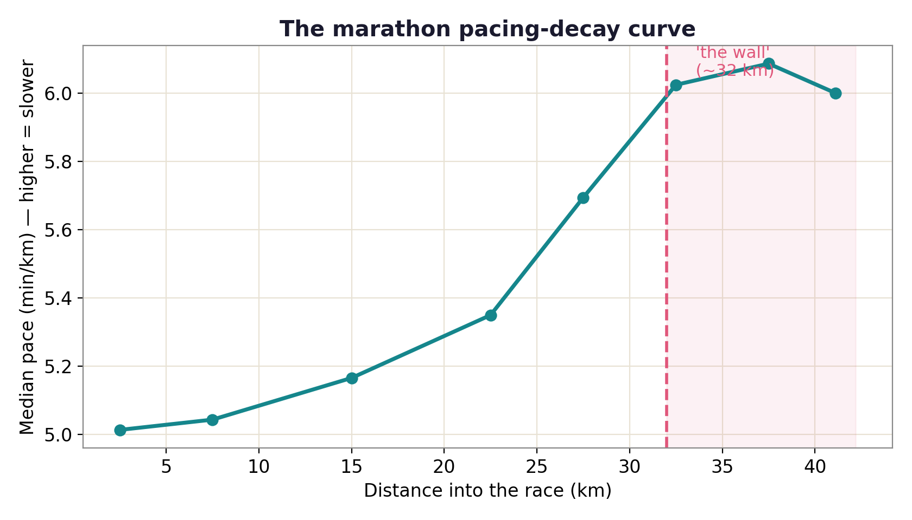
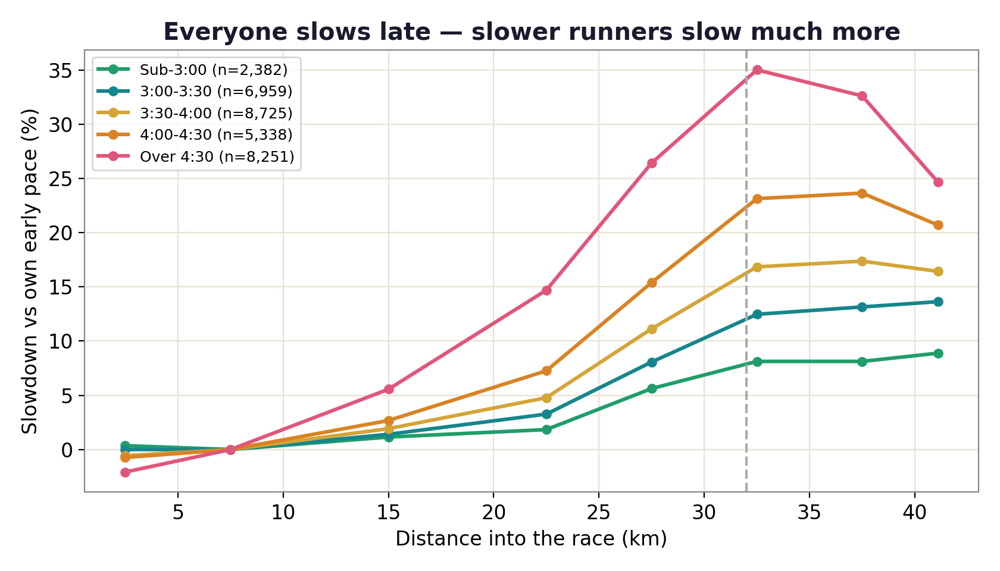
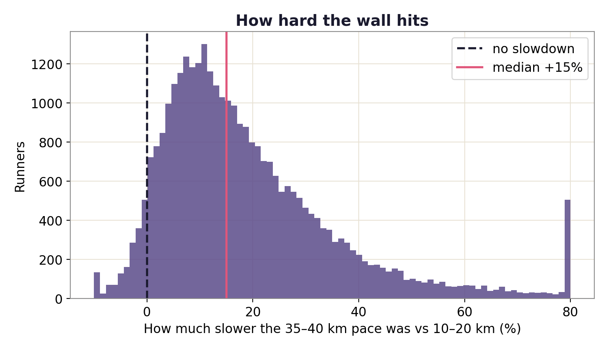

Boston Marathon 2014 · 31,655 finishers
Boston has a timing mat every 5 km, which turns the location of "the wall" into something you can measure. Across 31,655 finishers, median pace holds nearly flat to 20 km, drifts through 25 km, then climbs steeply into 30 km and stays high to the finish.
median pace at 25 to 30 km against the settled 5 to 10 km pace. One segment earlier it was +6%, one segment later +19%.
median late slowdown per runner: their own 35 to 40 km pace against their own 10 to 20 km pace.
of finishers slowed by more than 25% on that comparison, slightly more than one runner in four.
median pace per km in the first segment and in the slowest one, 35 to 40 km.
Start · the question
Ask marathoners where the wall is and you hear mile 18, mile 20 or mile 22. Each runner has a handful of races to go on, too few to see a shape, but one field of 31,655 is plenty.
Every Boston finisher leaves a cumulative time at 5, 10, 20, 25, 30, 35 and 40 km and at the finish. Each segment's time divided by its length is that runner's pace through it. The median across the field, segment by segment, is the average shape of the race.
The results sheet
These are the field's median paces as analyze.py writes them to
tables/segment_pace.csv. The change column compares each
segment with the 5 to 10 km pace, by which point the start-line crowding
has cleared.
| Segment | Median pace | min/km | vs 5–10 km | Change |
|---|---|---|---|---|
| 0–5 km | 5:01 | 5.014 | −0.6% | |
| 5–10 km | 5:03 | 5.044 | 0.0% | |
| 10–20 km | 5:10 | 5.166 | +2.4% | |
| 20–25 km | 5:21 | 5.350 | +6.1% | |
| 25–30 km | 5:42 | 5.694 | +12.9% | |
| 30–35 km | 6:01 | 6.024 | +19.4% | |
| 35–40 km | 6:05 | 6.086 | +20.7% | |
| 40 km–finish | 6:00 | 6.000 | +19.0% |
The two highlighted rows hold most of the climb: 13.4 of the 20.7 points between the 5 to 10 km pace and the slowest segment.
The curve
Plotted against distance, the same numbers make a corner. The first 20 km gain only 2.4%. If fatigue simply built up from the gun, the line would slope steadily from the start, and it doesn't. Something changes after 25 km, and by 30 km the field has settled into a pace about a minute per kilometer slower than where it began.

analyze.py. The script draws its shaded "wall" band from 32 km; in the table the steepest rise is between 25 and 35 km.Who it happens to
Split by finish time and measured against each group's own 5 to 10 km pace, the same shape appears at different strengths. Runners under 3:00 stay close to flat. Runners finishing after 4:30 are 30% or more slower in the closing segments. The wall is a slope that gets steeper further back in the field.

Runner by runner
of finishers ran 35 to 40 km more than 25% slower than 10 to 20 km.
The per-runner slowdown has a median of 15% and a long right tail. The median hides a split: many runners fade by a modest amount, and a large minority lose far more.

Limitations
Split data locates the slowdown and can't separate the causes (glycogen depletion, muscle damage, heat and a too-fast start all produce a late fade).
Boston's course is part of the result. The Newton hills run from about 16 to 21 miles, or 26 to 34 km, which is where the corner is. The net-downhill opening also makes early pace look quicker than it would on a flat course. A flat course would probably show a softer corner, but this study has no flat-course data to test that.
It is one edition of one race. The companion study on negative splits uses the same field, so the two share whatever was unusual about that day.
For a runner
The groups that stay flat late are the ones whose early pace left them something in reserve. The data shows an association and says nothing about mechanism. For a runner the reading is still the familiar one: the first 25 km are where you choose how the last 12 go.
Finish · how it was built
Two scripts. fetch_data.py downloads the results and
analyze.py writes every figure and both tables. Raw data is
git-ignored; the outputs are committed.